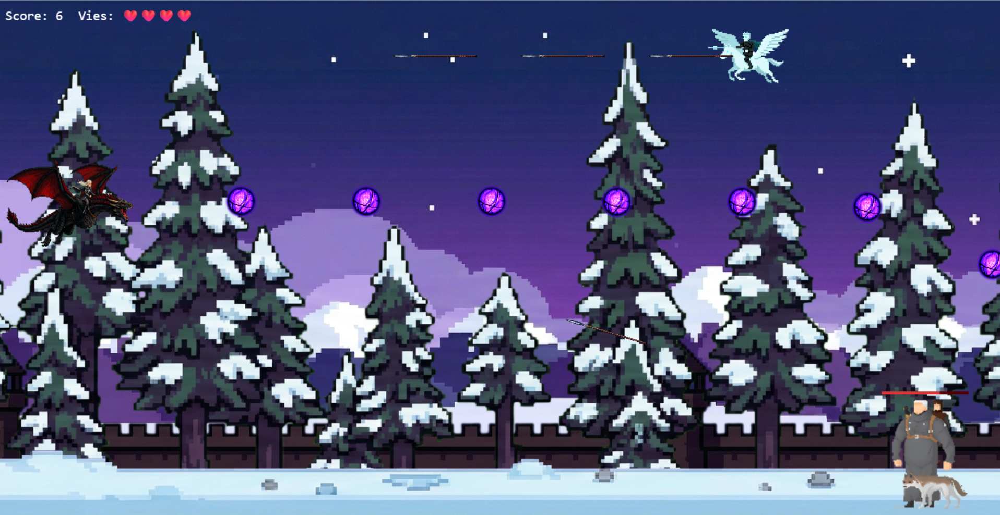

Bug of Thrones.
Shoot'em up multijoueur temps réel à 2 joueurs. Architecture client/serveur strictement séparée avec serveur autoritaire à 60 FPS via Socket.IO, leaderboard SQLite et 30 tests automatisés.

Le contexte.
SAÉ BUT2 Informatique, IUT de Lille, équipe de 3 (Aubin Cambier, Aliocha Deflou, Sewan Hamida). L'objectif : produire un jeu multijoueur temps réel complet en TypeScript, avec une vraie séparation client/serveur, un leaderboard persistant et une suite de tests automatisés.
Contrainte forte : le serveur doit être autoritaire (toute la logique de jeu côté serveur, le client n'est qu'un rendu) pour empêcher la triche et simplifier la synchronisation à 2 joueurs.
La stack.
L'architecture.
Trois modules strictement séparés : client (TypeScript + Canvas, envoie des inputs et affiche l'état reçu), server (Node.js + Socket.IO, exécute le tick autoritaire à 60 FPS), shared (types et constantes partagés).
Le client envoie ses inputs via WebSocket dans un setInterval. Le serveur stocke le dernier input par joueur, puis l'applique dans son tick à 60 FPS, et broadcaste l'état complet à tous les joueurs de la room.
Le leaderboard est sauvegardé en SQLite à la mort du joueur ou à sa déconnexion. Consultable via un socket dédié depuis le menu.
Les défis.
- Synchronisation client/serveur à 60 FPS sans interpolation côté client. Solution : server tick autoritaire avec input lag accepté, qualité testée en conditions réseau dégradées.
- Gestion propre de la déconnexion d'un partenaire en cours de partie. Solution : event explicite côté serveur, retour propre au lobby pour le client restant.
- Architecture `shared/` introduite trop tard, types dupliqués pendant le développement. Leçon : définir les contrats d'interface en premier, dès le sprint 1.
Les apprentissages.
Programmation réseau temps réel (WebSocket, Socket.IO), simulation autoritaire à tick fixe, écriture de 30 tests automatisés (collisions, mouvement, logique serveur, intégration socket), conteneurisation avec Docker et Podman, et l'importance de l'architecture dès le sprint 1 plutôt qu'en cours de route.